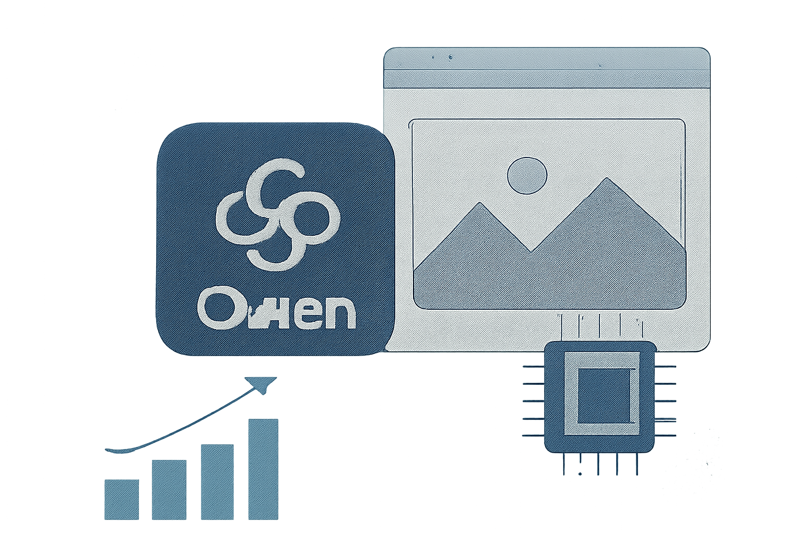
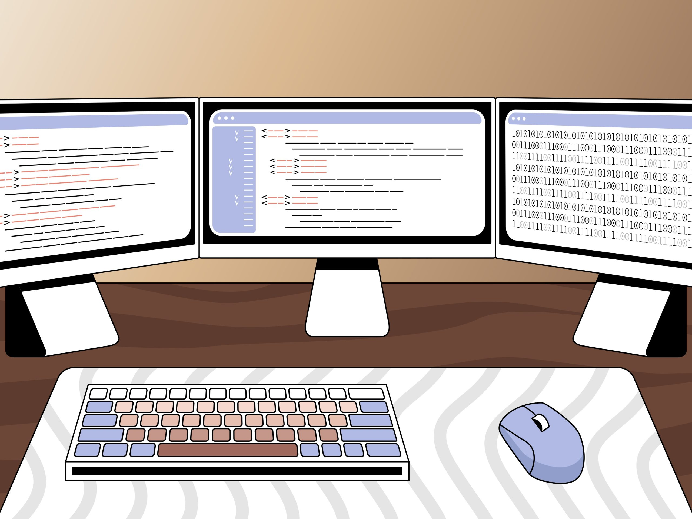

01 프론티어 & 사업 동향 이번 호 머리기사
TypeSafe AI, 자동화용 Jev 얼리 액세스 시작
TypeSafe AI가 채팅보다 소프트웨어 자동화에 맞춘 새 모델 계열 'System One Models'와 첫 모델 Jev를 공개했다.

Weekly AI Brief
이번 주 AI 흐름은 모델 성능 경쟁보다 배포와 사용 경계 관리로 옮겨갔다. 구글과 StepFun은 실시간 음성, 100만 토큰급 모델로 기능 범위를 넓혔지만, 동시에 MS 내부 문서와 ChatGPT 광고 코드 논란이 데이터 수집과 계정 연결의 기준을 다시 세우게 했다. 오픈웨이트 모델 비중이 Vercel 게이트웨이에서 과반을 넘고, AWS는 범용 에이전트 하네스를 오픈소스로 풀어 개발·운영 쪽 선택지를 넓혔다. 이번 주에는 성능 경쟁보다 학습 데이터, 추적 방식, 에이전트 운용 규칙이 어디까지 허용되는지 먼저 봐야 한다.

Editor's Pick
01 프론티어 & 사업 동향 이번 호 머리기사
TypeSafe AI가 채팅보다 소프트웨어 자동화에 맞춘 새 모델 계열 'System One Models'와 첫 모델 Jev를 공개했다.
02 프론티어 & 사업 동향
“Microsoft의 자체 데이터에 따르면 Copilot 답변 엔진은 The New York Times 도메인의 클릭률을 기존 Bing 검색보다 최대 93% 낮췄다…”
03 프론티어 & 사업 동향
“Gemini 3.8 Live는 대화를 이어 가면서 뒤에서 도구 실행과 API 호출을 처리한다.”
대형 연구소의 모델 공개·프리뷰, 규제/정책, 파트너십 등 산업이 움직인 사건입니다.
01 typesafe.ai 게시일 2026.09.15
TypeSafe AI가 채팅보다 소프트웨어 자동화에 맞춘 새 모델 계열 'System One Models'와 첫 모델 Jev를 공개했다.
“Jev는 기존 LLM과 비슷한 수준의 판단력을 내면서도 System One 작업에서 100배 가까이 더 빠르고 효율적이라고 TypeSafe AI가 밝혔다.”
0102 TechCrunch 게시일 2026.09.18
뉴욕타임스 저작권 소송에서 공개된 비공개 문서가 OpenAI와 Microsoft의 데이터 수집 방식을 더 구체적으로 드러냈다.
“Microsoft의 자체 데이터에 따르면 Copilot 답변 엔진은 The New York Times 도메인의 클릭률을 기존 Bing 검색보다 최대 93% 낮췄다.”
 02
0203 Google DeepMind 게시일 2026.09.15
Google DeepMind가 자연스러운 음성 대화를 겨냥한 Gemini 3.
“Gemini 3.8 Live는 대화를 이어 가면서 뒤에서 도구 실행과 API 호출을 처리한다.”
 03
0304 MarkTechPost 게시일 2026.09.21
StepFun이 에이전트형 업무를 겨냥한 Step 5 Preview를 공개했다.
“Step 5 Preview는 100만 토큰 문맥과 텍스트·이미지·영상 입력을 지원하는 StepFun의 플래그십 MoE 모델이다.”
 04
0405 buchodi.com 게시일 2026.09.20
한 독립 분석 글이 OpenAI의 광고 수집 코드가 다른 웹사이트 방문 정보를 ChatGPT 계정과 연결할 수 있다고 주장했다.
“OpenAI는 일반 웹사이트에서의 활동을 ChatGPT 계정과 연결할 수 있다고 이 글의 작성자는 재현 실험으로 주장했다.”
 05
05오픈웨이트 모델과 GitHub/Hugging Face 생태계에서 주목할 프로젝트입니다.
06 The New Stack 게시일 2026.09.18
Vercel AI Gateway에서 오픈웨이트 모델이 처음으로 월간 토큰 과반을 차지했다.
“8월에 오픈웨이트 모델은 Vercel AI Gateway 전체 토큰의 56%를 처리했지만, 지출 비중은 1달러당 14센트에 그쳤다.”
 06
0607 Qwen 게시일 2026.09.20
Qwen이 이미지 생성 관련 모델 'Qwen Image 2.
“Qwen은 챗봇, 이미지·영상 이해, 이미지 생성, 문서 처리, 웹 검색, 도구 사용까지 한 제품군 안에서 제공한다고 소개했다.”

07논문·벤치마크·기법 연구 중 실무 관점에서 볼 만한 결과입니다.
08 Hugging Face 게시일 2026.09.15
IBM Research가 에이전트의 '한 번 잘한 뒤 또 잘하느냐'를 따로 측정하는 방법과 개선 기법을 공개했다.
“같은 작업을 다섯 번 반복하면 평균 성공률은 77.4%였지만, 다섯 번 모두 성공한 작업 비중은 53.0%에 그쳤다.”
 08
0809 arXiv 게시일 2026.09.15
RiskChainBench는 숨겨진 플랫폼 메시지를 복원한 뒤, 연결된 웹사이트를 조사해 위험 보고서까지 만드는 AI 성능을 함께 재는 벤치마크다.
“웹 실행 실패가 조사 작업의 31.9%를 차지해, 핵심 병목이 웹 탐색 안정성에 있음을 드러냈다.”
 09
09개발 도구, 인프라, 보안 이슈 등 바로 써먹거나 조심해야 할 소식입니다.
10 The New Stack 게시일 2026.09.21
AWS가 개발자가 로컬이나 클라우드에서 돌릴 수 있는 범용 AI 에이전트 하네스인 Strands Harness를 공개했다.
“Strands Harness는 파일, 셸, 웹 도구와 문맥 관리, 메모리, 세션 저장을 기본으로 묶어 제공한다.”

10